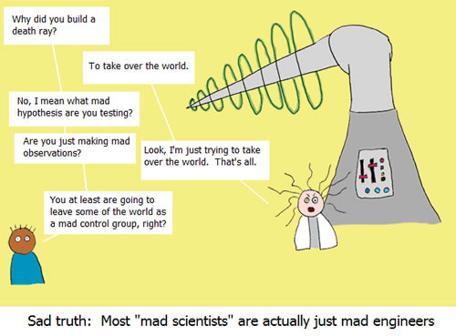
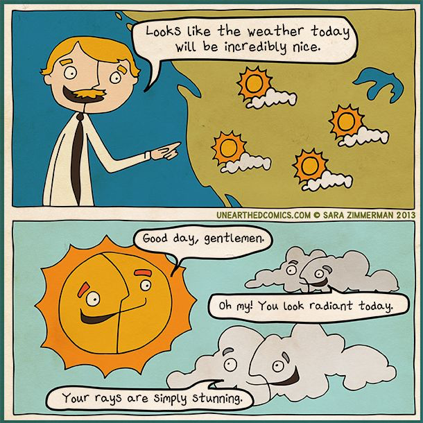

Isaiah 55:10
For as the rain and the snow come down from heaven and do not return there but water the earth,
making it bring forth and sprout, giving seed to the sower and bread to the eater.
Assignments this week (click me!)
Remember to start your independent science experiment if you haven't already!
Apologia hyperlinks for module 7:
p. 89 in the SNB: link.apologia.com/ECPS2N/7.1 Wind webpage by Weather Whiz Kids
Required for APSci:
Video about the types of clouds. Please follow this link and watch this video.
Reasons for the seasons - a TED-Ed video by Rebecca Kaplan
Cold Fronts and Warm Fronts by Keith Meldahl
Global Atmospheric Circulation by Keith Meldahl
Optional but Helpful:
Weather Underground's color coded wind map.
Coriolis Effect: IDTIMWYTIM
Weather vs. Climate
Vocabulary Flashcards on Quizlet
Module 7 flash cards

